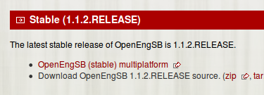
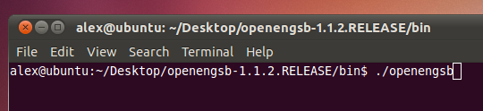
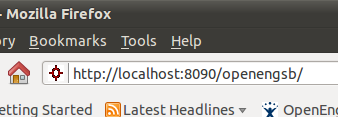
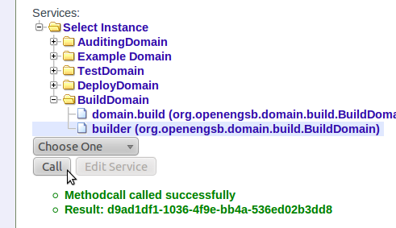
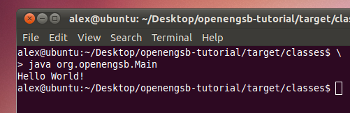
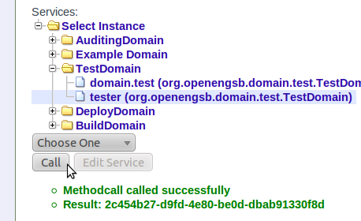
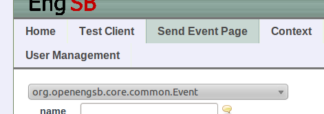

12.1. Goal
The service integration tutorial shows how to combine and automate different software tools, services and applications with OpenEngSB. To show OpenEngSB's versatility the use case we will be implementing is a continuous integration (CI) tool for software development processes. The tutorial takes a straight forward approach favoring visible results over architectural details of tool integration. Whether or not you have experience with CI, bear with the tutorial for a moment and you will see how simple it works out.
Before we get started let us lay out the idea of our CI tool and create a step-by-step development plan. The practice of continuous integration aims at improving software quality by frequent (automated) building and testing of a project's source base and by reporting back to the developers. The CI tool must be able to access the source repository, build the project, test the binaries and reports to the developers. And there we have a basic four step plan:
(1) Repository access
(2) Building source
(3) Testing binaries
(4) Notification process
If you would like to take a look at a fully functional CI server built on OpenEngSB check out OpenCIT. It implements a wider range of features, but it's a great reference.
12.2. Time to Complete
If you are already familiar with the OpenEngSB about 30 minutes. If you are not familiar with the OpenEngSB please read this manual from the start or check the homepage for further information.
12.3. Prerequisites
It is assumed you have basic knowledge of software development practices and you are able to set up auxiliary software (i.e. JDK 1.6) youself.
Warning: This section is likely to change in the near future, as the web UI as well as domains and connectors are subject to change.
12.4. Setting up OpenEngSB
 download openengsbGetting OpenEngSB is simple. Go to openengsb.org, download the latest stable version to your computer and unpack the archive to a convenient location. Before you fire up OpenEngSB for the first time, please make sure you have a Java Development Kit 1.6+ available and set up.
 openengsb consoleYou can startup OpenEngSB via the openengsb script in the "bin" folder. If you want to explore the web interface yourself before digging into implementing the CI use case, open up your web browser and navigate to http://localhost:8090/openengsb and log on as "admin" with password "password".
 openengsb web UIIf you want to take a break or shutdown OpenEngSB in the middle of the tutorial, go ahead and do not worry. All changes made so far are saved and restored upon restart, so you can continue working with the most up-to-date state. Use the shutdown command in OpenEngSB's management console to stop any running services.
12.5. Step 1 - Source repository
 check maven and jdk version
check maven and jdk version
It turns out, we actually need a sample project before we can start developing and testing our CI tool. In this tutorial we will be using Apache Maven for project and source management and a small Hello World application written in Java. For this to work flawlessly we need JDK 1.6+ (download) and Maven 3+ (download) to be set up on the computer.
 tutorial project package
tutorial project package
You may download and extract the openengsb-tutorial (download) project that works out of the box or set up your own sample project via maven archetypes. Put the project files in a memorable location (i.e. "/home/user/Desktop/openengsb-tutorial" or "C:\users\user\desktop\openengsb-tutorial") and that's about it for now.
12.6. Step 2 - Building the source code
 login
login
You could certainly build the project using Maven, but we want this to happen from within OpenEngSB. Open up your browser and go to the web interface at http://localhost:8090/openengsb. Authenticate using the Login link as "admin" with password "password".
 test client
test client
Switch to the Test client tab and check whether the build domain is available to accept commands.
 install connector in console
install connector in console
As the build domain is not shown, we will need to go to OpenEngSB's console. Use the "features:install openengsb-connector-maven" command to load the tool connector for Apache Maven. The tool connector allows OpenEngSB to communicate with an external service or application, Maven in this case. By loading the connector OpenEngSB also loads the domains associated with the connector. A domain is a generic interface that is implemented by specific connectors. For example, the build domain offers a generic function to build a software project. Whether this is done by Apache Maven, an Ant script or a plain compiler depends on the connector chosen by the user, but does not affect the basic model of our CI tool that simply "builds" the source. Using this technique specific tools can be exchanged quickly and transparently while data-flow and process models are completely unaffected.
 create new connector instance
create new connector instance
Now let us return to the web interface. After a page refresh we are able to create a new Maven connector instance by following the new link next to the connector description.
 setup build connector
setup build connector
The service id is an arbitrary name that can be referred to later on, i.e. builder. The project path refers to the local copy of the source repository, i.e. "/home/user/Desktop/openengsb-tutorial". Finally, the maven command is the command line option handed to Apache Maven, i.e. "clean build". Whenever the connector is ordered to build the project it will now execute "mvn clean compile" in the project directory of openengsb-tutorial. Click save to create the connector instance.
 test build connectorIt is time for some action. Scroll down all the way in the Test Client tab, navigate to the BuildDomain in the tree view and click the builder service. From the drop down menu below select build() and click the "Call" button. When the project is built successfully a "Method called successfully" message appears.
 hello worldLet us check the directory of openengsb-tutorial to find the newly created target directory. Using a console we can navigate to the classes sub-folder and run "java org.openengsb.Main". It returns "Hello World!". Congratulations, you have just implemented the core functionality of our CI tool.
In case an error message is returned, we need to check the connector configuration. Please make sure that Maven is able to build the project by manually executing "mvn clean build" in the project directory of openengsb-tutorial. If this does not work out, most likely the setup of either Maven or JDK are incorrect. If it works however, please check the configuration of the connector by navigating to the builder service in the web interface again and clicking the "Edit Service" button.
12.7. Step 3 - Testing binaries
The next step in building the CI tool is implementation of automated testing. We can use the test domain to achieve this. Conveniently, the Maven connector also exports this type of functionality and we do not to load any additional features in the management console.
 setup test connector instance
setup test connector instance
Use the Test client tab and create a new instance of the Maven connector for the "test" domain. It works the same way as before. The Service Id is an arbitrary name, i.e. tester. The project path points at the location of openengsb-tutorial's base directory, i.e. "/home/user/Desktop/openengsb-tutorial", and the maven command indicates the command line arguments passed to Maven, i.e. "test". Click save to create the connector instance.
 test test connector (yes, that's necessary)We are also going to test the newly created connector. Use the tree view at the bottom of the page to navigate to TestDomain and select the tester service. In the drop down box below choose runTests() and click the "Call" button. If the "method called successfully" message is returned, the Maven connector ran the rigorous unit tests on our sample application and they were passed with flying colors.
 send event pageIn case you are wondering about the output of the test suite go to the Send Event page. There you will find an audit list of all events processed by OpenEngSB and their corresponding payload, i.e. the output of the test run. The list behaves like a log file with most recent events appended to the bottom. In OpenEngSB any input from connectors is processed by domains and packaged in form of events. Every time an event is raised it can be matched by a rule in a central rule-base and cause a reaction of the system possibly invoking different domains or spawning additional events. By editing the rule-base we become able to link different actions together. Depending on the outcome of an action, we may receive different events, i.e. build success or build failure. By creating separate rules for each case we can react accordingly and by chaining multiple actions and events we could create a longer decision tree or process model.
12.8. Step 4 - Notification Process
In the final step we link the build and test stages together and add functionality to output results of the process. For this purpose we will create a small number of rules that react to events generated by the build and test stage. To keep things simple we do not add further connectors and assume that the build process is started by calling the builder's "build()" method in the Test client web UI.
We are going to write the results of the build and test stage to the management console of OpenEngSB. We will notify about the build starting and its outcome. Also, in case the build works out successfully we will automatically start the test process. Hence, we need rules matching "BuildStartEvent" and "BuildSuccessEvent" that write output to the console and potentially activate the test connector.
 rule base editor
rule base editor
The easiest way to edit the rule-base of our OpenEngSB instance is the editor area at the bottom of the Send Event page. You can find event types and names by checking the event log displayed on the page and create rules manually in the editor below. The rules are written in plain text, based on Drools (documentation) and Java standards. They are quickly understood, just take a look at the auditEvent rule used to generate the event log displayed on top of the page. You can display the rule by choosing "Rule" in the left-most drop-down box and "org.openengsb.auditEvent" in the second one. The text editor now shows that there is a when section that acts as filter for incoming events and there is a then section that describes the actions to be taken in case of a match.
 build started rule
build started rule
Let us start out and create our own rule. We will inform the user via console when a build process starts. Click the new button next to the drop-down boxes, enter a name for the newly created rule, i.e. "buildStarted", and save it. After selecting the rule in the drop-down box the text editor actually shows the same content as for the audit event. Do not be confused, it's the default template. You can start editing right away. Note: Writing output directly to the console without using a logger service is considered bad practice. Yet, it's simple and sufficient for demonstration purposes.
when
Event(type == "BuildStartEvent")
then
System.out.println("Build started");
This rule matches "BuildStartEvent" and prints a line to the console window. Click save to prepare the rule for testing. Switch to the Test client tab, select the builder and call the "build()" method. If things work out, you'll instantly see the "Build started" notification pop up in the management console.
It's time to push this further. Create another rule, i.e. "buildSuccessful" and edit it to look like this:
when
Event(type == "BuildSuccessfulEvent")
then
System.out.println("Build successful, running tests");
tester.runTests();
Note: as of OpenEngSB 1.1.2 there is a bug in the editor that prevents connector invocations ("connectorId.doSomething()") from working correctly.
 console output
console output
The rule also matches "BuildSuccessEvent" and prints a line to the console window. In addition, however, it calls a method provided by the test connector. Remember the "runTests()" method you called in the tester service by using the test client before? This has exactly the same effect but replaces manual UI interaction with an automated response. Click save and kick off another build using the Test client again. There you go: "Build started" and "Build successful, running tests".
Congratulations, you have created a basic CI tool! The foundations have been extended to allow for easy auditing and extensibility. Of course, at the moment it simply replicates the functionality of existing CI tools, but it can be easily extended using SCM access, reporting and notification tools and work together with project management software and PIM applications. Take a look on the long list of available domains and tool connectors.
If you want to do some more practice you can add more rules, i.e. for "TestSuccessEvent" or "BuildFailureEvent". You can find event types, names and properties by checking the event log displayed on the Send Event page.
12.9. Further Reading
There are a number of different HowTo's and tutorials in the online documentation. They describe different scenarios for setup, connectors and domains and event processing. Also, the user manual contains additional information about the topics discussed and numerous OpenEngSB subprojects, i.e. OpenCIT and OpenTicket, can be used for reference.
| Prev | Home | Next |
| Chapter 11. HowTo - Combine mulitple connectors | OpenEngSB Community | Part III. OpenEngSB Framework |